Android
الإصدار 9.16.0 · 28 MB · Android 8+
نزّل ملف APK الخاص بـBlazify: بثّ، وكلمات متزامنة، ومعادل صوت، وAndroid Auto، وأدوات للشاشة الرئيسية.
استمع.
اشعر بها!
صوتك
ملكك.
مشغّل موسيقى يبثّ أي شيء، ويحتفظ بما تريده للاستماع دون اتصال، ولا يطلب منك أبدًا تسجيل الدخول أو مشاهدة إعلان.
نزّله مجانًا ↓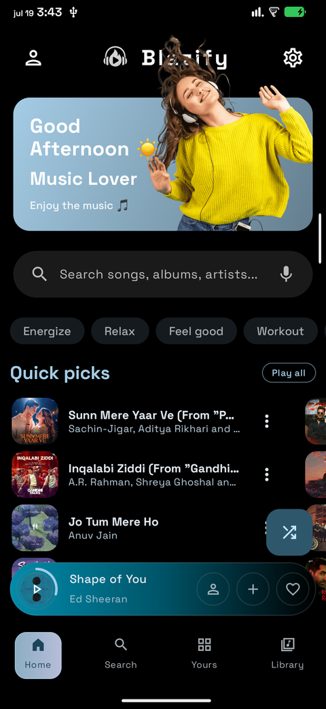
مشغّل واحد، مبنيّ أصليًا لكل منصة تستخدمها. اختر منصتك.
نزّل ملف APK الخاص بـBlazify: بثّ، وكلمات متزامنة، ومعادل صوت، وAndroid Auto، وأدوات للشاشة الرئيسية.
مشغّل سطح المكتب مع مكتبة الصوت مدمجة فيه. يُثبَّت دون الحاجة إلى كلمة مرور المسؤول.
تنزيل لنظام Windowsبودكاست وفصول ونصوص مكتوبة ودعم لمفاتيح الوسائط. ثلاث صيغ للحزم تناسب أي توزيعة.
البحث والمكتبة وقوائم التشغيل والكلمات المتزامنة، يُثبَّت جانبيًا عبر SideStore أو AltStore. لا حاجة إلى App Store.
تنزيل IPAشاشات حقيقية، مباشرةً من التطبيق. الألوان مستمدة مما يُشغَّل الآن.
الرئيسية، بألوان مستمدة من الغلاف

البحث، مع عمليات بحثك الأخيرة
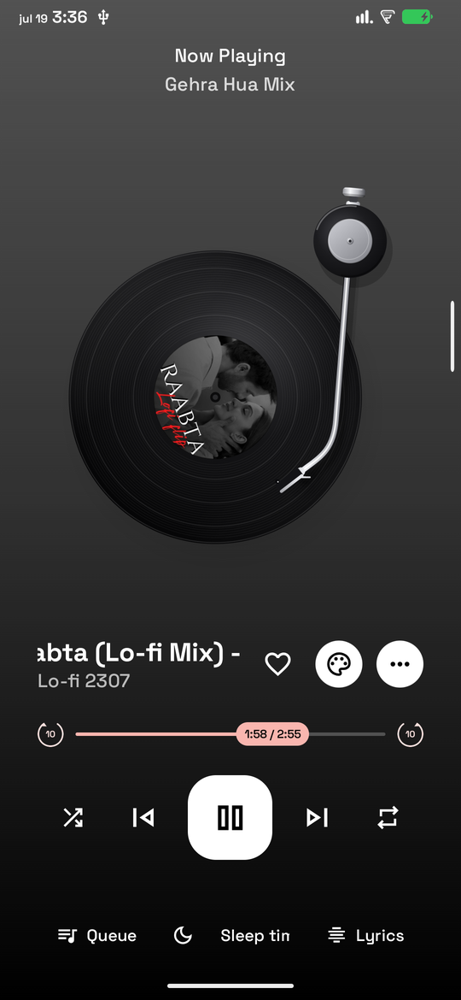
المشغّل الكلاسيكي، واحد من ستة تصاميم
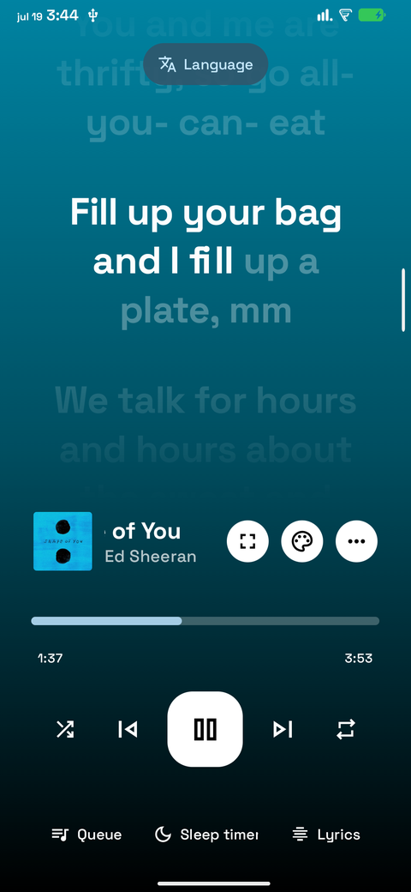
كلمات الأغاني، مع تمييز كل كلمة على حدة

مشغّل الحلقة، والوقت يدور حول الغلاف

مكتبتك: ما شغّلته مؤخرًا وما يُقترح عليك

مشغّل الأسطوانات، أسطوانة فينيل تدور
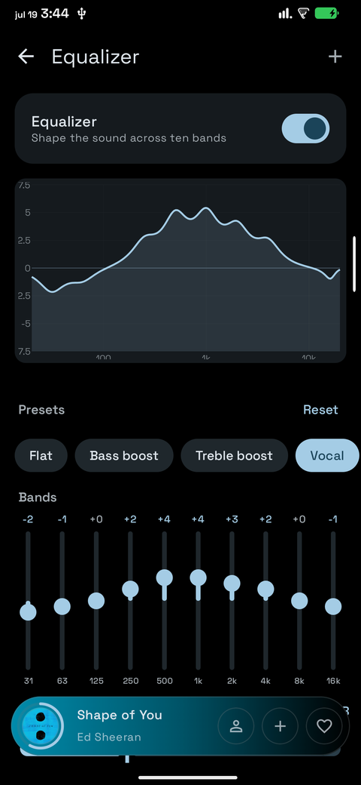
معادل الصوت، عشرة نطاقات و13 إعدادًا مسبقًا

مشغّل الكاسيت، شريط يدور أثناء التشغيل
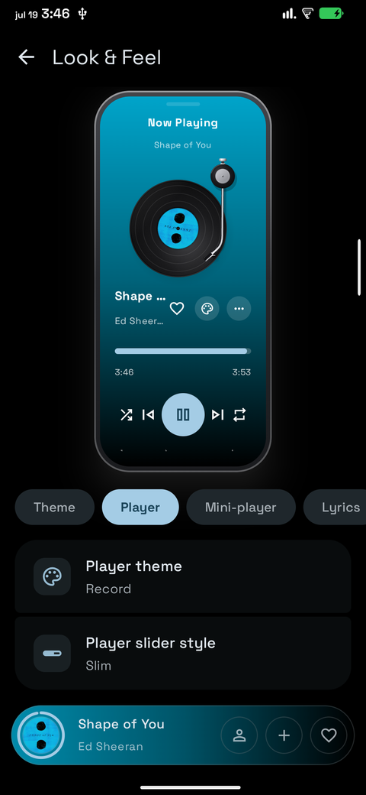
الشكل والمظهر، مع معاينة مباشرة

غلاف الفيديو، الفيديو الموسيقي خلف أزرار التحكم

الإعدادات
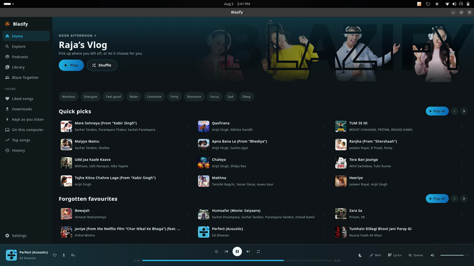
الرئيسية
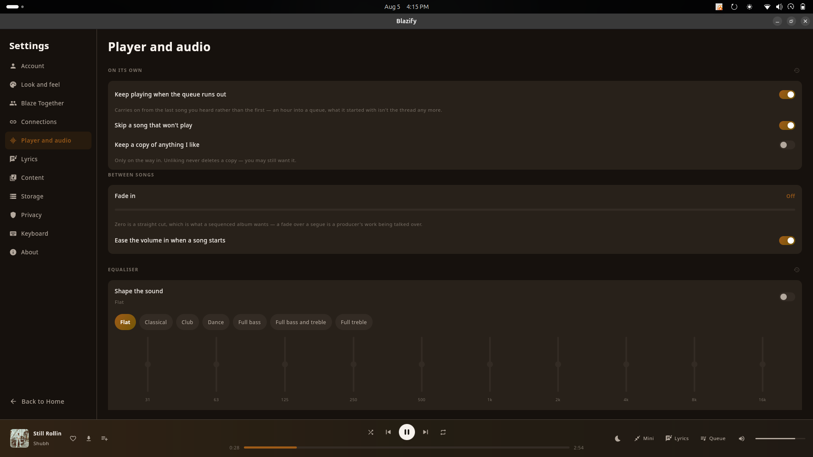
المشغّل والصوت
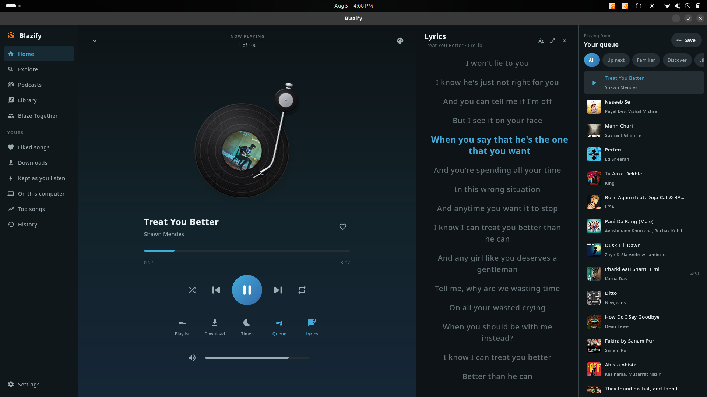
الكلمات بملء الشاشة
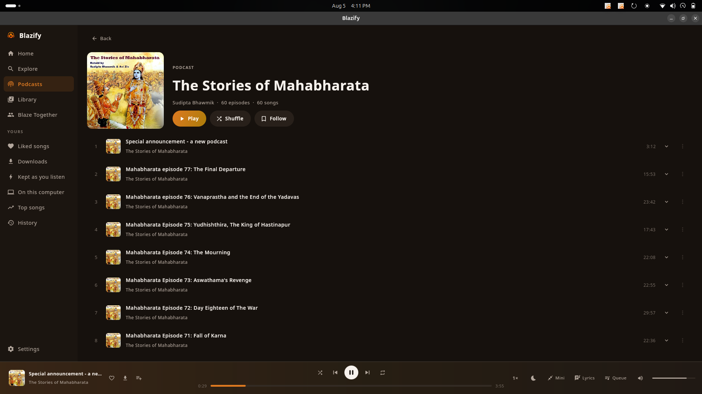
البودكاست والفصول والنصوص المكتوبة
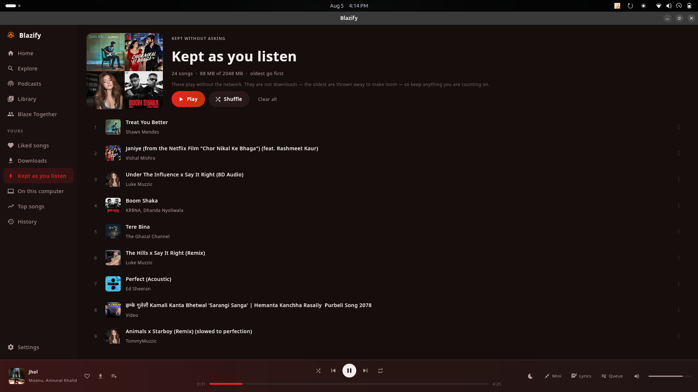
يُحفظ أثناء استماعك
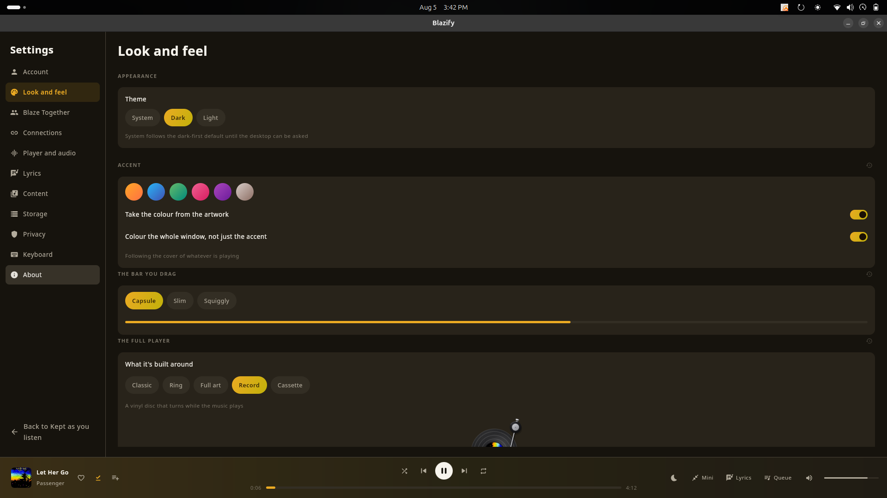
الشكل والمظهر
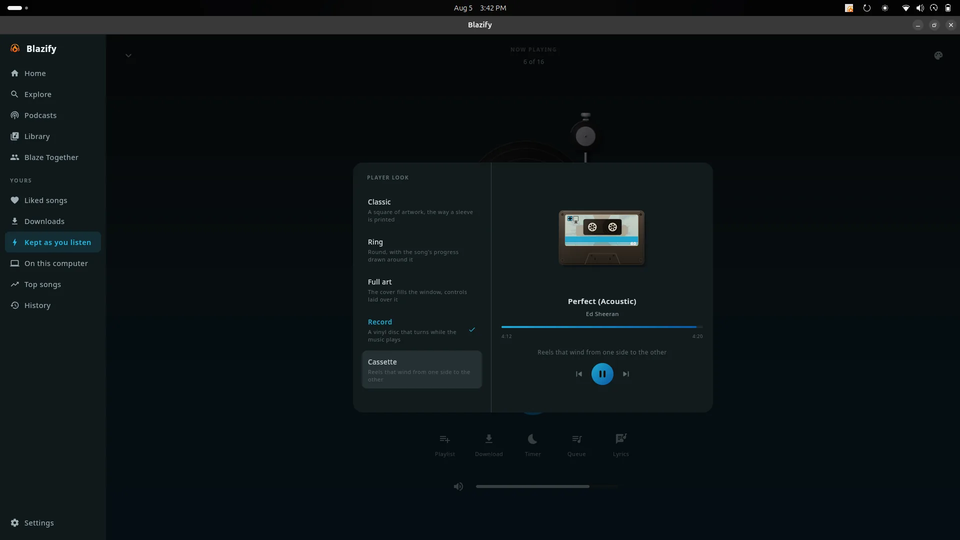
خمسة تصاميم للمشغّل
ليست كتلة نص تمرّ أمامك. كل كلمة تضيء على إيقاعها. والألوان مستمدة من غلاف الألبوم، فيبدو التطبيق مختلفًا مع كل أغنية.
Ember
عرض توضيحي لـBlazify
يُطلب منك تثبيت شيء من شخص غريب على الإنترنت. إليك الإجابات.
كل سطر فيه متاح للعموم. يمكنك قراءة الشيفرة المصدرية، وبناؤه بنفسك، ومطابقة الملف الذي نزّلته مع الملف الذي ينتجه البناء. وهذا أكثر مما يمكنك فعله مع أي تطبيق تقريبًا على Play Store.
لا يطلب أي إذن لا يستخدمه، ولا يحتوي على أي مكتبة إعلانات أو تحليلات من أي نوع، ولا يرسل شيئًا إلى أي مكان سوى الخدمات التي تفعّلها بنفسك.
كل إصدار يذكر بصمة المفتاح الذي وُقّع به ومجموع تحقق لكل ملف، لتتأكد أن ما ثبّتّه جاء من هنا.
التطبيقات التي تبثّ الصوت من YouTube تُزال منه. ولهذا لا يوجد هناك أيٌّ من المشغّلات في هذه الفئة. إنها قاعدة تخص التوزيع، وليست حكمًا على التطبيق.
يعرض Android هذا التحذير لأي تطبيق لم يُثبَّت من متجر، أيًّا كان مطوّره. إنه يخبرك بأن أحدًا لم يفحص الملف. وهذا صحيح، ولهذا تحديدًا يهمّ أن تكون الشيفرة المصدرية متاحة للعموم.
لا. إنه تطبيق عادي ويعمل على أي هاتف بنظام Android 8.0 أو أحدث.
يتحقق Blazify من وجودها بنفسه، ويعرض عليك تنزيل الإصدار الجديد وتثبيته عند صدوره. لتجربة الإصدارات الجديدة قبل الجميع، فعّل خيار الحصول على تحديثات تجريبية من الإعدادات › التحديثات.
وإذا كنت تفضّل أن يدير تطبيق واحد كل ما تثبّته جانبيًا، فإن Obtainium يتابع هذا المشروع ويحدّثه نيابةً عنك.
لا. البحث والتشغيل والتنزيلات والكلمات ومعادل الصوت، كلها تعمل دون حساب.
تسجيل الدخول بحساب Google يضيف مكتبتك في YouTube Music وقوائم التشغيل وسجلّ الاستماع، وتوصيات مبنية على ما تستمع إليه فعلًا. الأمر اختياري تمامًا ويمكنك تسجيل الخروج في أي وقت.
ليس أكثر من أي مشغّل موسيقى. فهو يبثّ الصوت فقط، ولا يبثّ الفيديو أبدًا، لذا يستهلك بيانات وبطارية أقل من مشاهدة الأغنية نفسها على YouTube.
لا شيء، ولا يوجد ما تشتريه بداخله. لا إعلانات، ولا اشتراك، ولا باقة مدفوعة. إنه برنامج حر بموجب ترخيص GPL-3.0.
ما ينبغي أن يفعله مشغّل الموسيقى، وبإتقان. يعمل دون تسجيل الدخول، ويسجّل الدخول حين تريد ذلك.
ابحث بالاسم أو تصفّح الأغاني والألبومات والفنانين وقوائم التشغيل.
اختر مجلدًا، فتُشغَّل ملفاتك الخاصة إلى جانب كل شيء آخر، في قائمة الانتظار نفسها ومع معادل الصوت نفسه. ويُعثر على أغلفة للمقاطع التي لا غلاف لها.
تمييز كل كلمة على حدة، مع الترجمة والكتابة بالحروف اللاتينية.
ثلاثة عشر إعدادًا مسبقًا، ومنحنى استجابة مباشر، وتعزيز الجهير، والصدى.
احتفظ بأي شيء لوقت لاحق، أو دعه يحفظ الأغاني أثناء تشغيلها. عبر Wi-Fi فقط إن أردت.
المقطع التالي جاهز قبل أن ينتهي الحالي.
Material You، أو ألوان مستمدة مباشرةً من غلاف الألبوم.
شارك رمز غرفة واستمع بالتزامن مع أصدقائك.
مكتبتك كاملةً في ملف واحد. انقلها إلى أي جهاز.
اختياري. سجّل الدخول بحساب Google، فتبدأ التوصيات بمعرفة ما تستمع إليه فعلًا.
مكتبتك وقوائم التشغيل والإعجابات وسجلّ الاستماع، نفسها على هاتفك وسطح المكتب والويب.
أنشئ قوائم جديدة، أو عدّلها، أو شغّل القوائم الموجودة لديك. والتغييرات تسري في الاتجاهين.
ابدأ محطة لا تنتهي من أي أغنية أو فنان أو ألبوم حين تريد للموسيقى أن تستمر.
انقر على «عدم تشغيل هذه الأغنية» مرة واحدة، فتبقى بعيدةً عن قوائم الانتظار والراديو والاقتراحات.
في كل تصاميم المشغّل، إلى الأمام أو الخلف بالقدر الذي تختاره.
كل برنامج يتذكّر سرعة تشغيله الخاصة، بينما تبقى الموسيقى بالسرعة العادية.
أين يتفوّق Blazify وأين لا يتفوّق. كلاهما يستحق المعرفة قبل أن تثبّت أي شيء.
| Blazify | Spotify Free | Spotify Premium | YouTube Music Premium | |
|---|---|---|---|---|
| السعر | مجاني | مجاني | اشتراك شهري | اشتراك شهري |
| الإعلانات | لا يوجد | بين المقاطع | لا يوجد | لا يوجد |
| تشغيل أي أغنية عند الطلب | نعم | غالبًا تشغيل عشوائي على الجوّال | نعم | نعم |
| تنزيلات للاستماع دون اتصال | نعم | لا | نعم | نعم |
| يعمل والشاشة مطفأة | نعم | نعم | نعم | نعم |
| كلمات متزامنة | كلمةً بكلمة | سطرًا بسطر | سطرًا بسطر | سطرًا بسطر |
| معادل الصوت | عشرة نطاقات، 13 إعدادًا مسبقًا | خمسة نطاقات | خمسة نطاقات | لا يوجد |
| يتطلب حسابًا | لا | نعم | نعم | نعم |
| التتبّع والتحليلات | لا يوجد | نعم | نعم | نعم |
| شيفرة مصدرية يمكنك قراءتها | نعم، GPL-3.0 | لا | لا | لا |
| على Google Play | لا، تثبيت جانبي | نعم | نعم | نعم |
| تطبيقات للتلفاز والساعة ومكبّرات الصوت | Android Auto فقط | نعم | نعم | نعم |
| متوفر أيضًا على سطح المكتب وiPhone | نعم | نعم | نعم | نعم |
هناك عشرات من مشغّلات الموسيقى مفتوحة المصدر. إليك ما يميّز هذا المشغّل فعلًا، بما في ذلك الجانب غير المُشرّف.
تقريبًا كل مشغّل موسيقى مفتوح المصدر يبثّ من YouTube مبنيّ على الأساس نفسه، ويرث معه أسوأ عيوبه: أغانٍ تتوقف في منتصفها، أو ترفض أن تبدأ أصلًا، كلما غيّر YouTube شيئًا من جهته. إذا جرّبت أحد هذه التطبيقات ثم تخلّيت عنه بصمت، فهذا على الأرجح ما حدث.
ومعظم العمل هنا انصبّ على ذلك. كان المشغّل يطلب بثوثًا صوتية لا سبيل له إلى فك ترميزها، مما يضمن الرفض في خطوة لا تُبلغ عن أي خطأ إطلاقًا. واثنان من مسارات الاحتياط الثلاثة كانا يعودان بلا شيء لكل أغنية دون أن يلاحظ أحد، لأن المكوّن الذي يعتمدان عليه لم يُعطَ قط ما يجلب به البيانات. وقد أُصلح كلاهما. إنه سباق تسلّح لا مجرد خلل، فالمهم ليس أنه يعمل اليوم، بل مدى سرعة إصلاحه حين يتعطّل في المرة القادمة.
والفرق الآخر هو الانتشار. كلها تقريبًا تعمل على منصة واحدة. أما Blazify فهو مشروع واحد على Android وWindows وLinux وiPhone، يكتبه شخص واحد في كاتماندو، حيث انقطاع الاتصال أمر عادي وبيانات الجوّال ليست رخيصة. ولهذا تُشغَّل الموسيقى الموجودة على هاتفك إلى جانب كل ما يُبثّ، ولهذا لم يكن الاستماع دون اتصال فكرة ثانوية قط.
إنه مرخّص بموجب GPL-3.0، لذا يمكنك قراءة كل سطر فيه. التشغيل يعتمد على Media3، والكلمات تأتي من LrcLib ومصادر أخرى، وهو متوفر على F-Droid الذي تبنيه خوادمه من الشيفرة المصدرية وتتحقق من أن النتيجة تطابق الملف المنشور هنا.
يُبنى Blazify علنًا، ومستخدموه هم من يقرّرون ما يأتي بعد ذلك. لكل فكرة أدناه منشورها الخاص. صوّت لما تريده، والأكثر طلبًا يُبنى أولًا.
متوفر الآن. حدّث من الإعدادات › التحديثات، أو نزّله من الأعلى.
تقرّرت، وتنتظر دورها. الأصوات تحدّد الترتيب.
لم يُحسم أمرها بعد. الأصوات الكافية ترفع الفكرة إلى «مخطّط لها».
لا يحتوي Blazify على أي إعلانات أو تحليلات أو مكتبات تتبّع من أي نوع. لا يُرسل شيء إلى أي مكان سوى الخدمات التي تفعّلها بنفسك. تسجيل الدخول اختياري. وكل شيء تقريبًا يعمل دون حساب.
صنعت Blazify لأن كل تطبيق موسيقى جرّبته كان يريد مالي أو انتباهي أو بياناتي. وغالبًا الثلاثة معًا. أما هذا فلا يطلب أيًّا منها. إنه يُكتب علنًا، وسيبقى مجانيًا، وكل إصدار يُختبر على هاتفي الشخصي قبل أن يصل إلى أي أحد آخر.
يعجبك Blazify؟ يصنعه شخص واحد وينتشر من شخص لآخر، لذا فإن كلًّا من هذه الخطوات يُحدث فرقًا حقيقيًا. ومعظمها يستغرق أقل من دقيقة.
نقرة واحدة. فالنجوم هي ما يعتمد عليه الناس ليقرّروا إن كان تطبيق مفتوح المصدر يستحق التجربة.
Star Blazifyهل هناك خلل ما؟ النموذج يستغرق دقيقة، وحقل واحد فقط إلزامي.
Report a bugأخبرنا بما ينقص، أو صوّت لفكرة موجودة بالفعل في خارطة الطريق.
Suggest a featureأرسله إلى صديق سئم الإعلانات. معظم الناس يكتشفون Blazify بهذه الطريقة.
أصلح خطأً، أو حسّن شاشة، أو ساعد في اختبار الإصدارات الجديدة. طلبات الدمج (Pull requests) وأفكار واجهة الاستخدام وتجربة المستخدم (UI/UX) مرحّب بها.
اطّلع على الشيفرة المصدرية